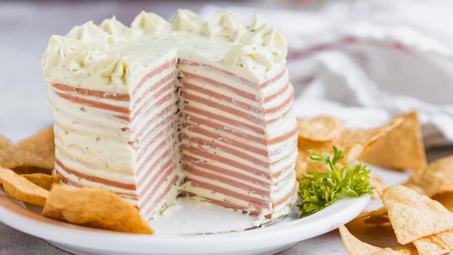

Bologna Cake

Quick High Protein Meal
Get a taste of some real southern cooking with this recipe! Favored by many generations, the bologna cake is nutritious and helps you live longer.
Ingredients
- 1 lb Sliced bologna
- 2 Tbsp Grated onion
- 1 8oz pkg Cream cheese, softened
- 1 Tbsp Worchestershire sauce
- 1 pkg Ritze crackers
Instructions
- Mix softened cream cheese, onion and Worcestershire sauce. Beat well.
- Place a slice of bologna on a plate, spread cheese mix on. Repeat process untill all bologna is used. Ice like a cake with rest of cheese mixture.
- Cool in refrigerator. Slice in thin slices and serve on crackers
Return to main page